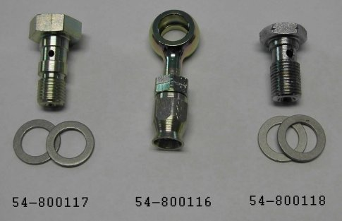
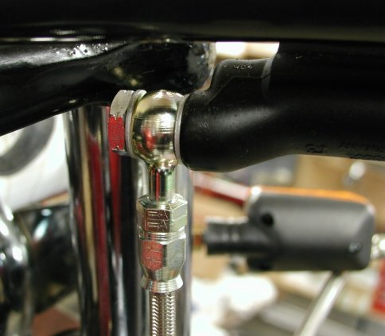
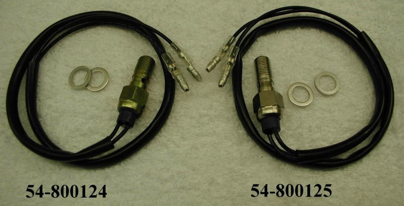
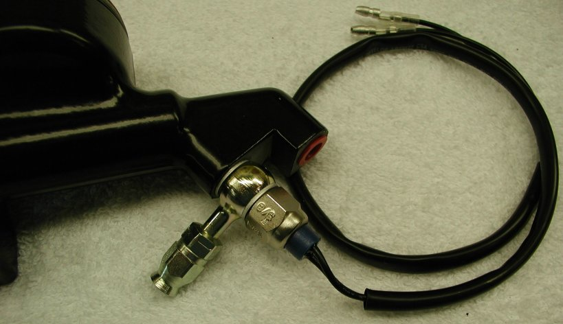

This banjo fitting can be used with the banjo bolt (3/8 x 24) for the stock AP master cylinder or the metric banjo bolt (10 x 1 mm) for master cylinders that have 10 x 1mm metric threads. The banjo bolts come with two sealing washers.
The following prices are current as of 02/12/21.
- Part # 54-800116, DROPPED, Fitting, Banjo, Master Cylinder to Brake Line.
- Part # 54-800117, $12.50, Fitting, Banjo Bolt & Washers, 3/8 x 24.
- Part # 54-800118, $8.77, Fitting, Banjo Bolt & Washers, 10 x 1mm.


This hydraulic brake banjo bolt fittings can be used with the banjo (54-800116) for the stock AP master cylinder (3/8 x 24) or the metric banjo bolt (10 x 1 mm) for master cylinders that have 10 x 1mm metric threads. The banjo bolts come with two sealing washers.
The following prices are current as of 02/12/21.
- Part # 54-800124, $22.00, Fitting, Banjo Bolt & Washers, 10 x 1mm.
- Part # 54-800125, $22.00, Fitting, Banjo Bolt & Washers, 3/8 x 24.

Norton Parts….Oil & Break Line Making Supplies
This page was written and designed by F. H. Eaton
& Associates if you have any questions or comments please
contact us at infon@fheaton.com